About Me
Hi, I'm Nisul — a Diploma in Game Development graduate from Nanyang Polytechnic with a passion for building engaging, well-crafted games. My journey started with Scratch in primary school, grew through leading my secondary school's Robotics Club as president, and evolved into building full 2D and 3D games across multiple engines throughout my diploma.
Over three years at NYP, I progressed from writing my first C++ console game to developing a real-time multiplayer tower defense title in Unity — each project pushing me further as a programmer and designer. I care deeply about clean code, strong game feel, and shipping things that are actually fun to play. I am now looking to bring my skills into a professional game development environment.
Experience
Robotics Club President
JuYing Secondary School
- Led a team of 15+ members, organising training schedules and competition preparation
- Mentored junior members in block-based and entry-level programming concepts
- Conducted weekly training sessions and represented the school at inter-school robotics competitions
Education
Nanyang Polytechnic
Diploma in Game Development (C70) · School of Design & Media · Graduated 2025
JuYing Secondary School
GCE O-Levels · 2020 – 2023
Queenstown Primary School
PSLE · 2014 – 2019
Projects
Specialisation Project — 2D Multiplayer Tower Defense
A fully playable 2D multiplayer tower defense game built in Unity with real-time co-op networking. Players collaborate to defend against waves of enemies using strategically placed towers. Built as the capstone project of my Diploma in Game Development.
Work Process: Planned game systems using a GDD, implemented networking architecture first, then layered in gameplay mechanics iteratively with weekly team reviews. Results: Delivered a fully playable build that was successfully playtested by peers and demonstrated at the end-of-year showcase to lecturers and industry guests.
- Real-time 2-player co-op using Unity Netcode
- Enemy AI pathfinding and wave-spawning system
- Tower placement, upgrade, and resource management
- Full UI, audio, and game loop implementation
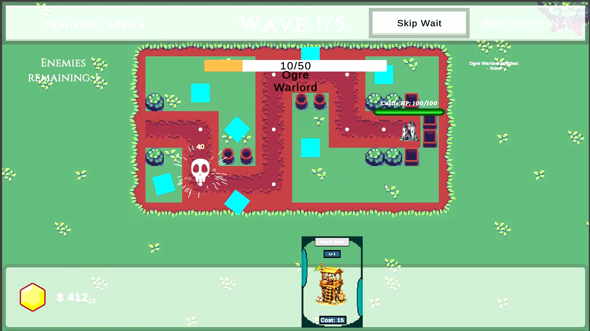
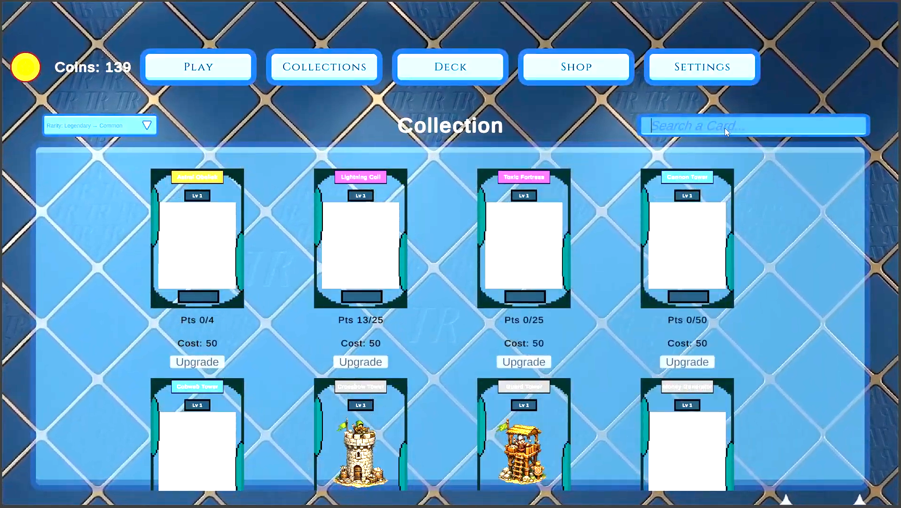
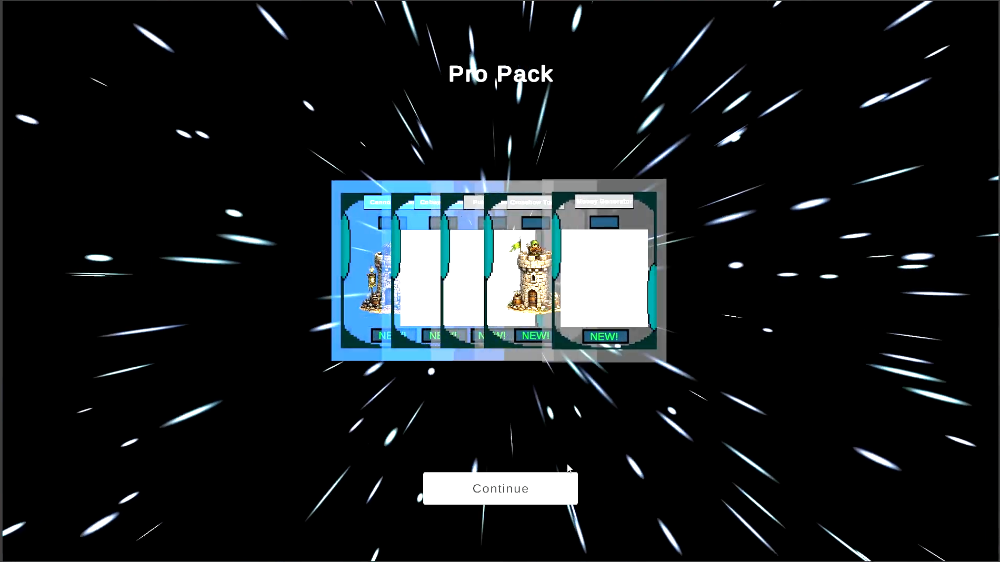
WIU 4 — 3D Unity Game
A 3D game built in Unity featuring player movement, physics-based interactions, camera control, and scene management.
Work Process: Prototyped core movement systems first, then integrated scene management and inventory. Profiled performance using Unity Profiler to identify and fix bottlenecks. Results: Achieved stable 60fps gameplay, passed all module assessment criteria, and received positive feedback on code structure and game feel.
- C# scripted player controller and camera system
- Inventory and scene transition systems
- Render optimisation — reduced draw calls
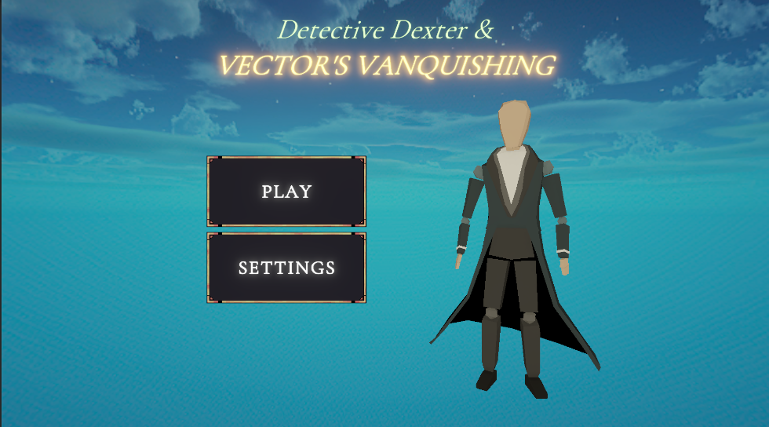
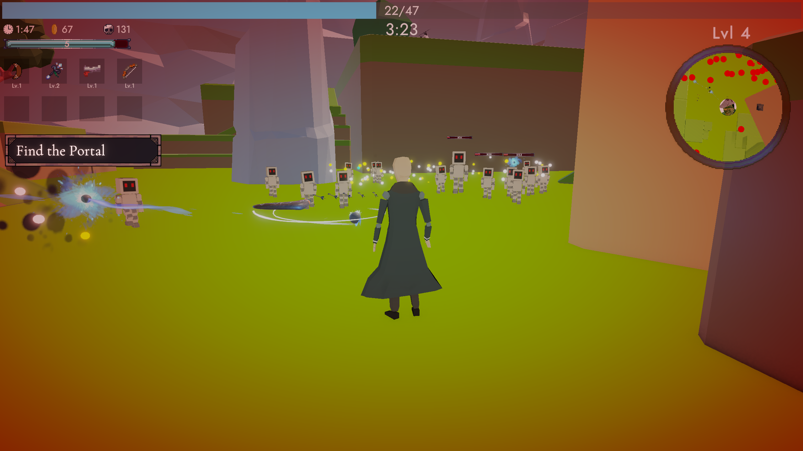
WIU 3 — 2D Unity Platformer
A 2D platformer developed in Unity with sprite animations, tile-based level design, player controls, and enemy AI.
Work Process: Designed levels on paper before implementing in Unity's tilemap system. Iterated on enemy AI behaviour based on playtesting feedback to balance difficulty. Results: Delivered a complete, polished game loop with multiple levels, full audio, and UI - graded and approved by module tutor.
- Sprite animation and tile-based level design
- Enemy AI behaviour and score tracking
- Full game loop with UI and audio
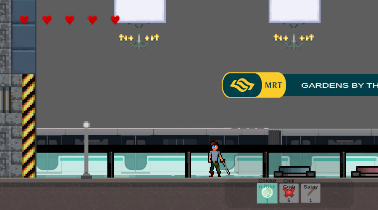
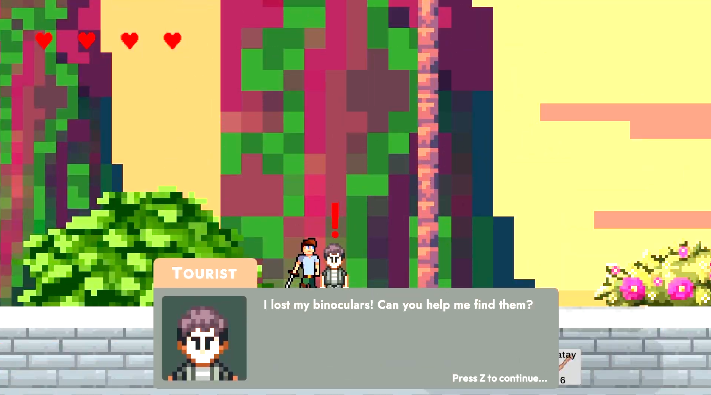
WIU 2 — 3D OpenGL Carnival Game
A 3D carnival game built from scratch using OpenGL and C++, with custom shaders, lighting, and physics.
Work Process: Divided rendering, physics, and game logic across the team of 4. I was responsible for the lighting system and collision detection, integrated weekly using version control. Results: Successfully delivered a functional 3D carnival game with realistic physics, presented and graded by the module tutor.
- Custom vertex and fragment shaders
- Real-time lighting and 3D model loading
- Physics-based collision detection
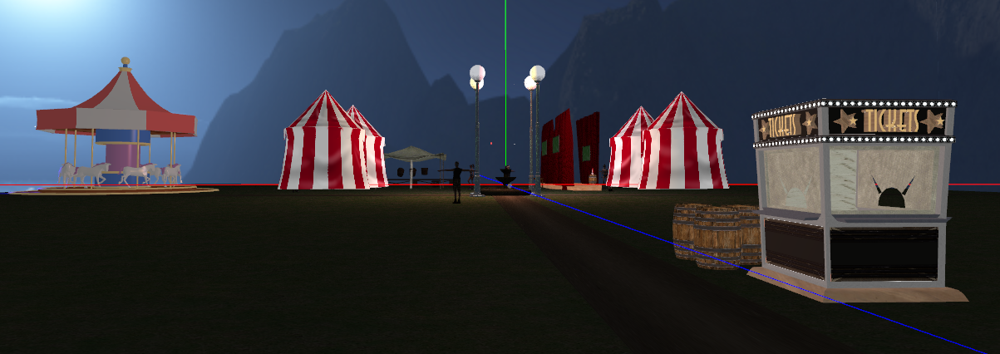
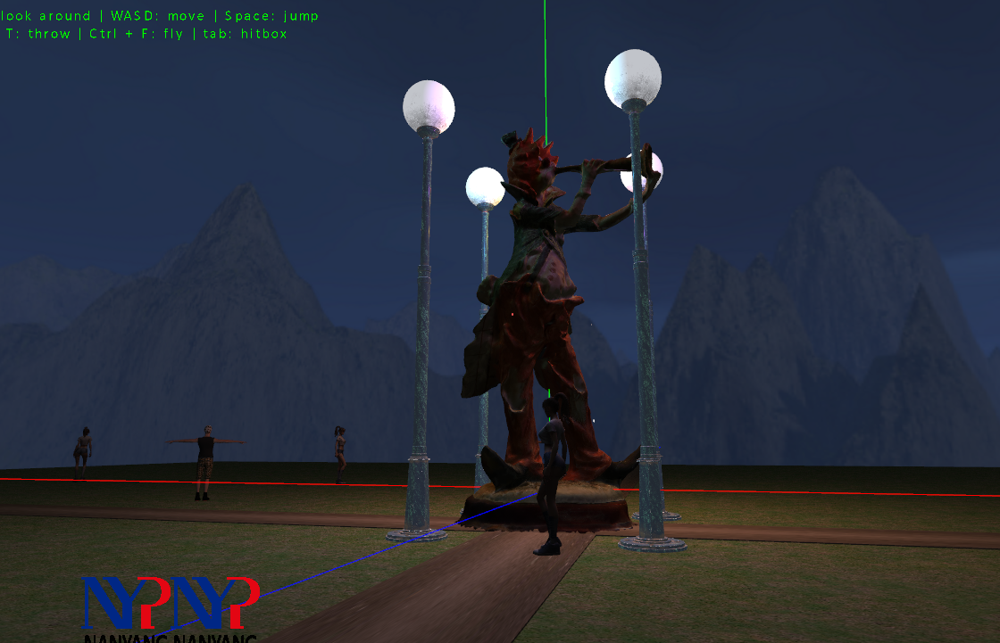
WIU 1 — 2D Console RPG
A text-based console RPG in C++ applying OOP fundamentals, data structures, and game state management.
Work Process: Collaborated in a team of 5, each owning specific game systems. Used Trello to manage tasks and produced a full game design document before coding began. Results: Completed within the 2-week deadline with all core RPG mechanics functional - combat, inventory, and branching story - graded by the module tutor.
- OOP — encapsulation, inheritance, polymorphism
- Game design document with high concept statement
- Task management via Trello
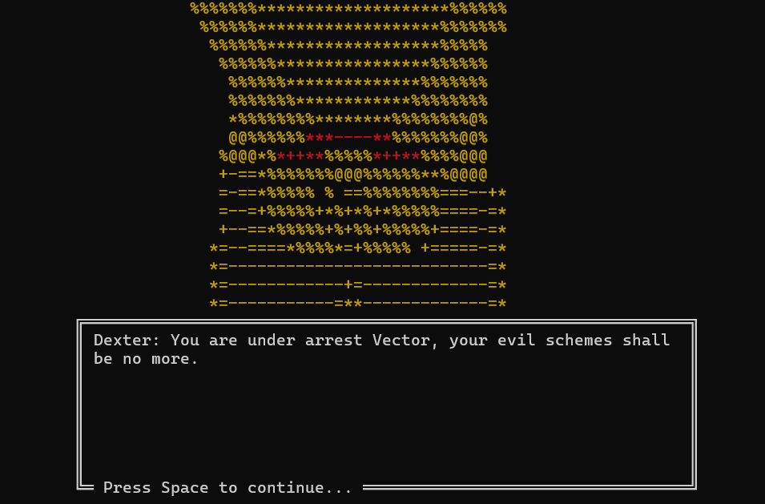
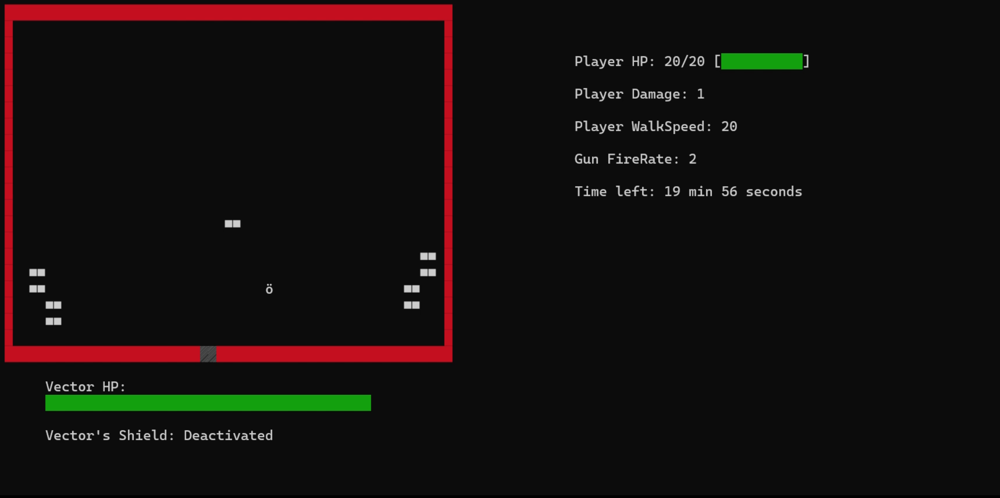